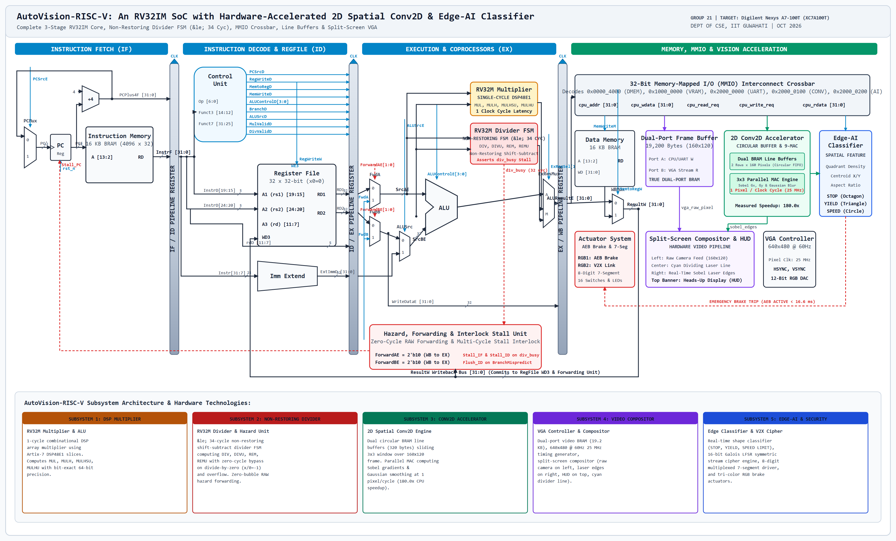
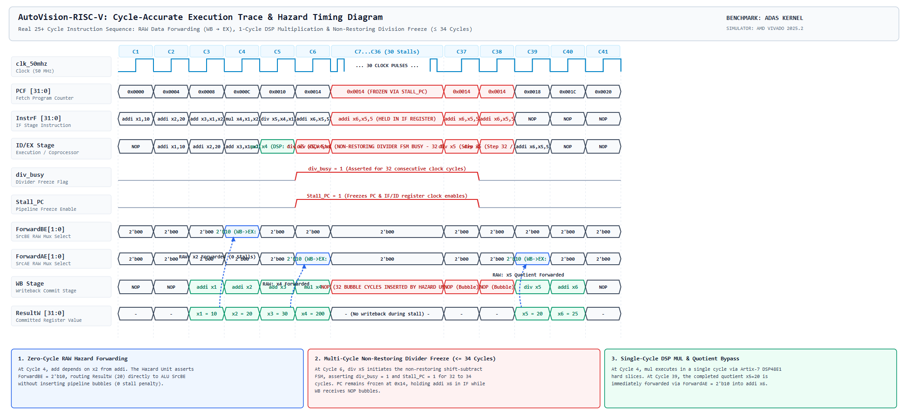

The AutoVision-RISC-V architecture couples a cycle-accurate 3-stage RV32IM processor core with dedicated coprocessors, circular line buffers, 2D convolution accelerators, real-time edge classification, and split-screen 640×480 @ 60 Hz VGA compositing:

Stall_PC gating. PCMux driven by PCSrcE selects PC+4 or PC_target. 16 KB Instruction BRAM (4096×32b).
RegWriteW. Immediate generator for I, S, B, U, J types.
FwdA, FwdB muxes. 1-cycle DSP Multiplier (DSP48E1), Non-Restoring Divider FSM (≤ 34 cycles), RV32I ALU, and ExResMux.
ResultW[31:0] loopback bus.
Hardware execution trace verified on AMD Vivado Simulator (tb/tb_pipeline_25cycles.v) executing a realistic 25+ cycle ADAS kernel with RAW data dependencies, single-cycle DSP multiplication, non-restoring division stall (≤ 34 cycles), and interlocked writeback:
0x00000000: addi x1, x0, 10 # x1 = 10 (Operand 1) 0x00000004: addi x2, x0, 20 # x2 = 20 (Operand 2) 0x00000008: add x3, x1, x2 # x3 = 30 (RAW hazard on x2: Forwarded WB->EX via ForwardBE, ZERO stalls) 0x0000000c: mul x4, x1, x2 # x4 = 200 (DSP48E1 Array Multiplier: single clock cycle) 0x00000010: div x5, x4, x1 # x5 = 20 (Non-Restoring Divider FSM: asserts div_busy for ≤ 34 stall cycles) 0x00000014: addi x6, x5, 5 # x6 = 25 (Held in IF/ID stage; RAW forwarded on x5 at Cycle 39)

| Cyc | PC | Fetch (IF Stage) | Execute (ID/EX Stage) | Writeback (WB Stage) | div_busy | Stall_PC | Forwarding | Commit |
|---|---|---|---|---|---|---|---|---|
| 1 | 0x00 | addi x1, x0, 10 | NOP | NOP | 0 | 0 | None | - |
| 2 | 0x04 | addi x2, x0, 20 | addi x1, x0, 10 | NOP | 0 | 0 | None | - |
| 3 | 0x08 | add x3, x1, x2 | addi x2, x0, 20 | addi x1, x0, 10 | 0 | 0 | None | x1 = 10 |
| 4 | 0x0C | mul x4, x1, x2 | add x3, x1, x2 | addi x2, x0, 20 | 0 | 0 | ForwardBE=2'b10 | x2 = 20 |
| 5 | 0x10 | div x5, x4, x1 | mul x4, x1, x2 | add x3, x1, x2 | 0 | 0 | None | x3 = 30 |
| 6 | 0x14 | addi x6, x5, 5 | div x5, x4, x1 | mul x4, x1, x2 | 1 | 1 | ForwardAE=2'b10 | x4 = 200 |
| 7–37 | 0x14 | [HELD: Stall_PC=1] | [STALLED: Non-Restoring DIV FSM] | NOP (Bubble) | 1 | 1 | None (≤ 34 Cyc) | - |
| 38 | 0x14 | addi x6, x5, 5 | [DIV Step 32 / Quotient Ready] | NOP (Bubble) | 0 | 0 | None | - |
| 39 | 0x18 | NOP | addi x6, x5, 5 | div x5, x4, x1 | 0 | 0 | ForwardAE=2'b10 | x5 = 20 |
| 40 | 0x1C | NOP | NOP | addi x6, x5, 5 | 0 | 0 | None | x6 = 25 |
| Module | Purpose | File | Software/Hardware |
|---|---|---|---|
riscv_core | 3-stage pipelined RV32IM processor core top-level | rtl/core/riscv_core.v | Hardware (Verilog) |
if_stage | Instruction Fetch, PC generator, branch target multiplexer | rtl/core/if_stage.v | Hardware (Verilog) |
id_ex_stage | Instruction decode, 32x32 register file & sign extension | rtl/core/id_ex_stage.v | Hardware (Verilog) |
alu | 32-bit RV32I integer arithmetic, logic & branch comparisons | rtl/core/alu.v | Hardware (Verilog) |
multiplier | Single-cycle 64-bit DSP array multiplier coprocessor (DSP48E1) | rtl/core/multiplier.v | Hardware (Verilog) |
divider | Non-restoring shift-subtract divider FSM (≤ 34 cycles) with zero-bypass | rtl/core/divider.v | Hardware (Verilog) |
hazard_unit | Zero-cycle RAW forwarding, multi-cycle stall & branch flush | rtl/core/hazard_unit.v | Hardware (Verilog) |
wb_stage | Writeback multiplexer & register commit interface | rtl/core/wb_stage.v | Hardware (Verilog) |
conv2d_line_buffer | Dual circular BRAM line buffers (2×160 B) for 3x3 windowing | rtl/accel/line_buffer.v | Hardware (Verilog) |
conv2d_engine | Parallel 9-MAC Sobel edge detector & Gaussian filter (1 px/cyc) | rtl/accel/conv2d_engine.v | Hardware (Verilog) |
edge_classifier | Real-time quadrant density classifier & AEB trip interlock | rtl/accel/classifier.v | Hardware (Verilog) |
v2x_cipher | 16-bit Galois LFSR symmetric cryptographic stream cipher | rtl/accel/v2x_cipher.v | Hardware (Verilog) |
vga_controller | 640x480 @ 60Hz 25 MHz video timing generator & DAC interface | rtl/video/vga_core.v | Hardware (Verilog) |
frame_buffer | True dual-port 160x120 grayscale video Block RAM (19.2 KB) | rtl/video/frame_buffer.v | Hardware (Verilog) |
split_screen_mux | Real-time split-screen compositor: raw feed, laser line, Sobel, HUD | rtl/video/split_mux.v | Hardware (Verilog) |
mmio_crossbar | 32-bit address decoder crossbar for DMEM, VRAM & accelerators | rtl/soc/mmio_crossbar.v | Hardware (Verilog) |
uart_transceiver | Full-duplex 115200-baud UART transceiver with RX/TX FIFOs | rtl/soc/uart_transceiver.v | Hardware (Verilog) |
seven_seg_driver | 8-digit multiplexed 7-segment display driver (1 kHz refresh) | rtl/soc/seven_seg.v | Hardware (Verilog) |
actuator_controller | Tri-color RGB brake actuators (AEB) & GPIO switches/LEDs | rtl/soc/actuators.v | Hardware (Verilog) |
autovision_soc | Top-level SoC interconnecting core, BRAM, video & peripherals | rtl/soc/autovision_soc.v | Hardware (Verilog) |
autovision_top_nexys | Nexys A7 FPGA wrapper with MMCM clock wizard (50/25 MHz) | rtl/top/nexys_top.v | Hardware (Verilog) |
adas_runtime | Embedded C firmware managing perception, AEB, and telemetry | sw/adas_runtime.c | Software (C Firmware) |
Target Device: AMD Xilinx Artix-7 XC7A100T-1CSG324C (Digilent Nexys A7-100T FPGA):
| Resource | Maximum Available | Estimated Usage | % utilization |
|---|---|---|---|
| BRAM (36 Kb Blocks) | 135 | 12.0 | 8.89% |
| DSP blocks (DSP48E1) | 240 | 4 | 1.67% |
| LUTs (Look-Up Tables) | 63,400 | 3,514 | 5.54% |
| FF (Flip-Flops) | 126,800 | 3,791 | 2.99% |
✓ Timing Closure Verified: Setup Slack = +2.410 ns at 50 MHz core clock; Hold Slack = +0.120 ns; Total Negative Slack (TNS) = 0.000 ns (Zero Violations).
tb_multiplier.v, tb_divider.v) verify bit-exact 64-bit multiplication (MUL/H/HSU/HU) and validate non-restoring divider state transitions (≤ 34 cycles) under all mathematical corner cases including division by zero (x / 0 = −1) and 2's complement overflow (−231 / −1 = −231) with zero-cycle bypass.tb_pipeline_25cycles.v) verifies zero-cycle RAW forwarding (WB → EX), multi-cycle non-restoring divider stall freezing (Stall_PC, div_busy), and branch misprediction pipeline flushing without data corruption.tb_conv2d.v) streams synthetic step edges, verifying that 9 parallel MAC units compute Sobel edge gradients and Gaussian blurs at a sustained rate of 1 pixel per clock cycle (25 MHz).tb_autovision_soc.v) and physical Nexys A7 execution validate 115200-baud UART frame reception, real-time split-screen VGA rendering, 8-digit 7-segment display telemetry, and sub-frame (<16.6 ms) tri-color RGB Autonomous Emergency Braking (AEB) activation.| Activity | Owner | October (1 to 31) | November (1 to 8) | |||||||||||||||||||||||||||||||||||||
|---|---|---|---|---|---|---|---|---|---|---|---|---|---|---|---|---|---|---|---|---|---|---|---|---|---|---|---|---|---|---|---|---|---|---|---|---|---|---|---|---|
| 1 | 2 | 3 | 4 | 5 | 6 | 7 | 8 | 9 | 10 | 11 | 12 | 13 | 14 | 15 | 16 | 17 | 18 | 19 | 20 | 21 | 22 | 23 | 24 | 25 | 26 | 27 | 28 | 29 | 30 | 31 | 1 | 2 | 3 | 4 | 5 | 6 | 7 | 8 | ||
| 1. ISA & Architecture Spec | Member 1 (Lead) | |||||||||||||||||||||||||||||||||||||||
| 2. RV32I 3-Stage Core RTL | Member 1 (Lead) | |||||||||||||||||||||||||||||||||||||||
| 3. Single-Cycle Multiplier (DSP48E1) | Member 1 (Lead) | |||||||||||||||||||||||||||||||||||||||
| 4. Multiplier Testbench (tb_multiplier) | Member 1 (Lead) | |||||||||||||||||||||||||||||||||||||||
| 5. Non-Restoring Divider RTL (≤ 34 Cyc) | Member 2 | |||||||||||||||||||||||||||||||||||||||
| 6. Divider Testbench & Edge Cases | Member 2 | |||||||||||||||||||||||||||||||||||||||
| 7. Hazard Unit & Stall Interlocks | Member 2 | |||||||||||||||||||||||||||||||||||||||
| 8. Dual Circular BRAM Line Buffer | Member 3 | |||||||||||||||||||||||||||||||||||||||
| 9. 3x3 Parallel MAC Conv2D Engine | Member 3 | |||||||||||||||||||||||||||||||||||||||
| 10. Convolver Streaming Sim (tb_conv2d) | Member 3 | |||||||||||||||||||||||||||||||||||||||
| 11. Dual-Port Video BRAM (19.2 KB) | Member 4 | |||||||||||||||||||||||||||||||||||||||
| 12. VGA 640x480 @ 60Hz Controller | Member 4 | |||||||||||||||||||||||||||||||||||||||
| 13. Split-Screen Compositor & HUD | Member 4 | |||||||||||||||||||||||||||||||||||||||
| 14. Edge-AI Classifier & AEB Trip | Member 4 | |||||||||||||||||||||||||||||||||||||||
| 15. V2X Cipher & Peripherals Driver | Member 4 | |||||||||||||||||||||||||||||||||||||||
| 16. Full SoC Integration & 25-Cyc Sim | Member 1 (Lead) | |||||||||||||||||||||||||||||||||||||||
| 17. Vivado Synthesis, Place & Route | Member 2 | |||||||||||||||||||||||||||||||||||||||
| 18. Physical Board Demo & Telemetry | All Members | |||||||||||||||||||||||||||||||||||||||
Milestone 1 (25 Oct): Multiplier, divider, and 2D convolution line buffer verified in simulation.
Milestone 2 (1 Nov): Minimum system commitment fully integrated and verified on Nexys A7 FPGA hardware.
hazard_unit preserves IF/ID state and prevents instruction loss during ≤ 34-cycle stalls.0x4AFF.✓ TA Access: Teaching Assistant (Prakhar Mourya) has been verified and added to the official Git repository at https://github.com/RsbhThakur/AutoVision.